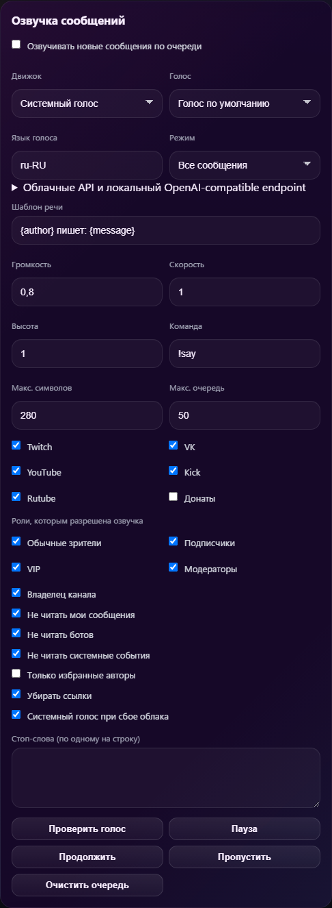

Приоритет 1 · Automation graph
Условия, очереди, OBS actions и reusable presets приблизят гибкость к Streamer.bot и SAMMI без отказа от простого режима.
Market scan · checked 2026-07-14
Проверяемые возможности по официальным страницам продуктов. Это не рейтинг: инструменты решают разные задачи.
Scope
Встроено — возможность прямо заявлена разработчиком. Интеграция — достигается через связанный продукт, расширение или внешний движок. Не заявлено — такой возможности нет в просмотренных официальных материалах; это не доказательство её полного отсутствия.
Цены и состав тарифов меняются. Ниже зафиксировано состояние официальных страниц на . «Двусторонний чат» означает чтение и отправку, а «relay» — автоматическую пересылку сообщений между площадками.
CoronerChat position

Условия, очереди, OBS actions и reusable presets приблизят гибкость к Streamer.bot и SAMMI без отказа от простого режима.
Версионированные события, permissions и подписанные пакеты позволят наращивать площадки и устройства без раздувания core.
Points, rewards, viewer queue и лёгкие игры закроют разрыв со StreamElements, Streamlabs и BotRix.
Коннектор стоит добавлять только после проверки официального API, правил платформы и стабильного способа авторизации.
Product map
CoronerChat, Restream Chat и Social Stream Ninja собирают несколько источников в одной операторской ленте.
Streamlabs Cloudbot, StreamElements и BotRix сосредоточены на командах, модерации и удержании аудитории.
Streamer.bot и SAMMI связывают события, OBS, команды и внешние сервисы в настраиваемые сценарии.
Speaker.bot и SpeechChat — TTS; Lumia Stream — устройства и шоу; TikFinity — интерактив TikTok LIVE.
Capability matrix
Короткие формулировки намеренно отражают только то, что можно подтвердить источниками ниже.
| Продукт | Платформы / двусторонний чат | Relay | OBS / desktop | Модерация | Автоматизация | Loyalty / игры |
|---|---|---|---|---|---|---|
| CoronerChat | Twitch, VK, Kick, YouTube: чтение/отправка; Rutube: чтение и отправка через cookie-сессию | Resend: ретрансляция входящих сообщений в другие чаты | Windows desktop, локальный web UI, OBS Browser Source и OBS WebSocket | Действия модератора Twitch | Пресеты эфира, WebSocket, Ulanzi Deck | Достижения; полноценная loyalty-система не заявлена |
| Restream Chat | Twitch, YouTube, DLive, Discord, Kick: read/reply; часть источников только read | Встроено для поддерживаемых источников | Browser, desktop; overlay через Browser Source | Фильтрация комментариев и скрытие пользователей в overlay | Reply-команды; API событий чата | Не заявлено |
| Social Stream Ninja | 100+ сервисов; two-way для многих, включая Twitch, YouTube и Facebook | Встроено | Browser extension или desktop; dock и overlays для OBS | Фильтры; AI-модерация | Команды, webhooks, API, OBS remote, plugins | Мини-игры, giveaway и очередь |
| Streamlabs Cloudbot | Бот для Twitch, YouTube, Kick и Trovo; не единый операторский чат | Не заявлено | Облачный; файлы не устанавливаются | Фильтры caps, emotes, links, symbols, words и др. | Команды, timers, polls, media share | Points, rewards, giveaways, minigames |
| StreamElements | Chatbot для Twitch и YouTube; справка также описывает Kick | Не заявлено | Облачные widgets; SE.Live для OBS существует отдельно | Spam filters, mod commands, user levels | Commands, timers, counters, chat alerts | Points, store, giveaways, contests и 11+ модулей/игр |
| Streamer.bot | Встроенный мультичат Twitch, YouTube, Kick; отправка и mod tools | Не заявлено как готовый relay | Локальное Windows-приложение; OBS dock и управление OBS | Slash commands и mod tools; платформенные действия | Triggers, actions, C#, WebSocket/API, интеграции | Реализуется actions/интеграциями; готовая loyalty не заявлена |
| SAMMI | Twitch и YouTube: события, чтение/отправка; несколько аккаунтов | Через community extension для Discord | Windows; прямое управление OBS WebSocket | Через собственные сценарии/расширения | Визуальная логика, local API, JS extensions, web/UDP/files | Community extensions: points, slot machine и др. |
| Speaker.bot | Twitch chat/events; Streamlabs donations и StreamElements tips/merch | Не заявлено | Portable Windows desktop; LAN WebSocket со Streamer.bot | Не заявлено | Интеграция со Streamer.bot | Не заявлено |
| Lumia Stream | Twitch, YouTube, Kick, TikTok и другие интеграции; команды, а не единый чат | Не заявлено | Windows/macOS/Linux; OBS, Meld и Streamlabs actions/alerts | Mod tools и filtered words | Triggers, conditions, API, plugins, JS, smart devices | Loyalty leaderboard, achievements, raffles, wheels, polls |
| SpeechChat | Web-клиент Twitch и YouTube; поле отправки сообщений | Не заявлено | Browser; отдельная установка не требуется | Mute user/group и keyword filtering | Форматы сообщений и event responses | Не заявлено |
| BotRix | Облачный bot для Trovo, Twitch, YouTube, Kick и Discord | Не заявлено | Cloud; alerts/widgets добавляются в streaming software | Настраиваемое удаление spam и links | Custom commands, timers, stream/Discord notifications | Points, levels и giveaways |
| TikFinity | TikTok LIVE; chatbot отвечает на пользовательские команды | Не заявлено | Desktop; widgets для TikTok LIVE Studio, OBS и Streamlabs | Не заявлено в просмотренных страницах | Actions/events, IFTTT, WebSocket endpoint | Игровые интеграции; rewards через Team Member Levels |
Extensions and economics
| Продукт | Алерты | TTS | API / plugins | AI | Local-first / privacy | Цена на дату проверки |
|---|---|---|---|---|---|---|
| CoronerChat | DonationAlerts, MemeAlerts и OBS alert overlay | Последовательная очередь; системные голоса, OpenAI-compatible, ElevenLabs, Google Cloud и Azure; фильтры, шаблон, Pause/Skip/Clear | Локальные HTTP/WebSocket endpoints, Ulanzi plugin | Не заявлено | Runtime и ключи сохраняются локально; облачный TTS получает текст только при явном выборе провайдера | Готовые Windows-сборки доступны в GitHub Releases; отдельный платный тариф не заявлен, облачные TTS имеют собственную тарификацию |
| Restream Chat | TTS-уведомления о сообщениях в desktop app | В desktop app | Chat API | Не заявлено для Chat | Облачный аккаунт; есть desktop client | Free: $0; Restream Standard $19/мес., Professional $49/мес. при помесячной оплате |
| Social Stream Ninja | Donations и featured-chat overlays | System/local и cloud providers | Open API, webhooks, scriptable plugins | Ollama и hosted providers; moderation/co-host | Open source; browser/desktop; local AI/TTS доступны, transport может использовать hosted session API | Бесплатно и open source |
| Streamlabs Cloudbot | Chat alerts; Alertbox/media share в экосистеме | Не заявлено на странице Cloudbot | Custom commands; публичный plugin API не заявлен | Не заявлено для Cloudbot | Полностью облачный, работает 24/7 | Cloudbot бесплатен; Ultra нужен для custom bot name ($27/мес. или $189/год) |
| StreamElements | Chat alerts; бесплатные overlays/widgets | Возможен reward в loyalty store; отдельный штатный TTS не заявлен | Custom commands и экосистема widgets | Не заявлено для chatbot | Облачный dashboard/chatbot | StreamElements заявляет инструменты бесплатными |
| Streamer.bot | Actions создают alerts; интеграции с alert-сервисами | Через Speaker.bot | C#, internal WebSocket, clients и integrations | Не заявлено как штатная функция | Прямо заявлены Local First и Privacy Focused | Core бесплатен; часть новых функций — Patreon Supporter Perks |
| SAMMI | Custom alerts через buttons/actions | Community extension | Local API и community JavaScript extensions | ChatGPT — community extension | Локальный Windows Core; Panel может работать по LAN | Core/Bridge/Deck/Voice бесплатны; отдельные extensions могут быть платными |
| Speaker.bot | Озвучивает chat и events | Основная функция; SAPI5 и несколько cloud engines | WebSocket integration со Streamer.bot | AI-голоса зависят от выбранного внешнего движка | Portable local app; SAPI5 локален, cloud engines передают текст провайдеру | Приложение скачивается без тарифа; SAPI5 free, внешние engines имеют собственные цены |
| Lumia Stream | Custom alerts и overlay alert box | Встроено | API, plugins, JavaScript и hardware protocols | AI Assistant в premium-функциях | Desktop app; часть устройств поддерживает local control, сервисы/интеграции могут быть облачными | Free; Premium $5.99/мес., $32.99/6 мес. или $59.99/год |
| SpeechChat | Event messages и sound effects | Основная функция браузерного клиента | Не заявлено | Не заявлено | Web service; конфигурация сохраняется через Google Drive | Доступен web-клиент; пожертвования и stars, фиксированный тариф не опубликован |
| BotRix | Stream/Discord alerts и widgets | Не подтверждено официальной главной страницей | Custom command variables; публичный API не заявлен | Не заявлено | Полностью облачный; установка не нужна | Есть premium membership, но публичная цена на просмотренных официальных страницах не указана |
| TikFinity | Sound alerts и interactive widgets | Встроено | Локальный WebSocket endpoint; IFTTT | Не заявлено | Desktop app должен работать на том же ПК для WebSocket API; TikTok-события приходят извне | Официальная страница заявляет широкий набор функций бесплатным; отдельная цена desktop premium не показана |
Evidence
Все ссылки проверены 2026-07-14. Для CoronerChat источником служат документация и README этого репозитория.
Площадки · User Guide · README
Chat · Event sources · Pricing
Overview & integrations · Features · Pricing/supporter perks